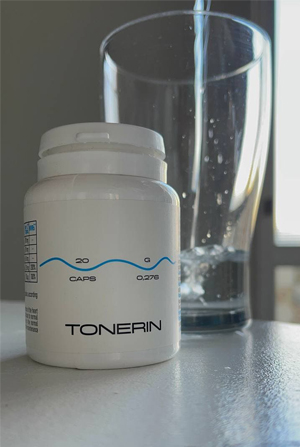
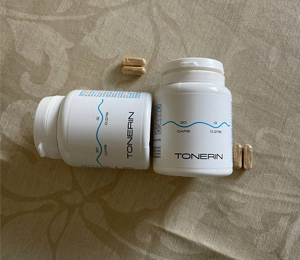

DESCOPERIRE INTERZISĂ: "Un om de știință mi-a spus cum să scap de 9 din 10 boli presupuse incurabile. Acestea sunt cauzate de hipertensiune arterială!”
În timpul filmărilor unui interviu cu Gabriel Crețu, a avut loc un incident care a pus sub semnul întrebării opinia "marilor" oameni de știință. El a șocat publicul cu declarațiile sale. Reprezentanții afacerii farmaceutice au primit-o în special.
Gabriel Crețu a declarat deschis: "Există o mulțime de informații despre noul virus în aer, dar toată lumea închide ochii la problema care ucide 1,5 milioane de oameni din țară în fiecare an! De ce nu vorbește nimeni despre bolile cardiovasculare? De ce tăceți despre faptul că există deja un remediu care ajută la eliminarea completă a tensiunii arteriale crescute?
Tensiunea arterială! Acesta este principalul ucigaș al oamenilor. Nu numai în țara noastră, ci peste tot în lume. Și toată lumea se preface că așa ar trebui să fie. Nu observați metode avansate care vor rezolva această problemă odată pentru totdeauna.
"Chimia nu ajută la inima și la vase de sânge, ci le ucide!"
Bolile cardiovasculare ocupă primul loc, sunt lideri în lume în ceea ce privește numărul de vieți pe care le iau. 94% din atacurile de cord și accidentele vasculare cerebrale sunt cauzate de hipertensiunea arterială. În 89% din cazuri, hipertensiunea arterială ca urmare a unui atac de cord și accident vascular cerebral duce la moarte.
Dacă vorbim despre cifre specifice, atunci hipertensiunea arterială este cauza morții "naturale" în 77-78% din cazuri. În termeni absoluți, aceasta este de aproximativ 1,5 milioane de decese. Acum se folosesc multe metode și mijloace, dar în cele din urmă oamenii continuă să moară
"Oamenii mor nu de un virus, ci de o inimă arsă și de vasele de sânge! Amintiți-vă acest lucru o dată pentru totdeauna!"- spune Gabriel Creionu.
Statisticile sunt uluitoare! Epidemia a luat 25.000 de vieți pe an, iar aproape 500.000 de oameni au murit din cauza bolilor vasculare și cardiace.
Iar lucrul amuzant și trist este că 99,87% din cazurile severe ale noului virus - acestea sunt persoane cu boli vasculare! Cu tensiunea arterială. Cu o inimă. Dacă nu ar fi aceste boli, acestea ar fi asimptomatice. Și acesta este principalul grup de risc. Și din nou, nimeni nu vorbește despre acest lucru, deoarece apare imediat întrebarea – ce se oferă pentru a atenua starea persoanelor cu vase și inimă bolnave?
Daniela Farcaș: "Gabriel Crețu ești o persoană curajoasă dacă nu ți-e frică să faci astfel de declarații!»
Gabriel Crețu: "Sunt atât de bătrân încât nu mă tem de nimic. Și nu mai pot să tac. Nu poți vorbi prostii sau sugera metode greșite. Sunt om de știință, trebuie să spun adevărul.
Și sunt întotdeauna responsabil pentru cuvintele mele. Epidemia trece treptat, lumea va supraviețui, va supraviețui, ca toate epidemiile anterioare. Dar virusul lăcomiei și răutății, mă tem, va rămâne cu noi pentru totdeauna. Împotriva acestui virus încă nu a fost dezvoltat un vaccin.
Daniela Farcaș: "Despre ce vorbiți mai exact?»
Gabriel Crețu: "Cert este că există boli cu care oamenii trebuie să trăiască ani de zile. Știu bine acest lucru: studiez problema bolilor cardiovasculare, precum și noi metode de reabilitare a persoanelor care au suferit atacuri de cord și accidente vasculare cerebrale. Și văd cât de des oamenii bolnavi sunt pur și simplu înșelați.
Văd cum, cu probleme ale sistemului musculo-scheletic, ale tractului gastro-intestinal și orice altceva, oferim remedii care ușurează pur și simplu starea, dar nu întăresc sănătatea în general.
Iar motivul pentru aceasta sunt companiile farmaceutice care nu se pot opri în setea lor de profit. Și acum, când toată lumea se teme de virus, a venit epoca de aur pentru aceste companii. Puteți vinde teste, dezinfectanți și remedii separat pentru fiecare simptom. Și toate decesele pot fi atribuite epidemiei. Văd totul și mă simt rău."
Nu ajutăm vasele de sânge și nu eliminăm tensiunea arterială!
Daniela Fărcaș: "Deci înțelegeți că nu toate remediile moderne pentru hipertensiunea arterială sunt eficiente?»
Gabriel Crețu: "Preparatele antihipertensive vândute în farmacii private îndeplinesc o funcție importantă — pompează bani din buzunarele persoanelor în buzunarele bogaților farmaceutici."
Acestea sunt droguri legale. Gândiți-vă la asta singur. Persoana ia o pastilă, și starea lui se îmbunătățește. Remediul încetează să funcționeze, și nivelul tensiunii arteriale crește din nou. Toate pastilele funcționează așa. Pentru a vă simți bine, trebuie să găsiți o nouă "doză".
Cel mai important lucru este să înțelegem că mijloacele "chimice" sunt necesare și importante în situații de urgență. Ele salvează vieți când este o nevoie de ajutor urgent. De exemplu, în timpul Primului Război Mondial, heroina a fost folosită pe câmpul de luptă, astfel încât răniții să nu moară de durere.
Dar dacă continuați să luați pastilele, acestea distrug organismul. La fel ca heroina. Nu atât de repede, dar principiul este același. Și pentru a scăpa de efectele secundare, ei vând mai multe pastile. Și mai mult. Și mai mult. Cu cât mai mult, cu atât mai bine pentru farmacii private și industria farmaceutică."
Daniela Fărcaș: "Dar oamenii trăiesc ani de zile luând aceste pastile!»
Gabriel Crețu: "Dependenții de droguri pot trăi, de asemenea, destul de mult timp. Dar ce fel de viață este asta? Când articulațiile dor. La o vârstă înaintată, puțin peste 50 de ani, ei primesc prostatită și își pierd potența. Când rinichii nu funcționează și încep să sufere de umflături. Picioarele se vor umfla, deci va fi dificil să mergeți. Apoi suferă organele interne. De exemplu, cu edem, stomacul devine în formă de butoi.
Unele pastile cu utilizare prelungită au de obicei un efect oncogen. Uitați-vă la statisticile cancerului - aceasta este o adevărată epidemie.
Nu vorbesc despre lucruri atât de mici precum probleme de somn, zgomot în urechi, pierderea vederii și a auzului. Lista poate fi lungă. Și există un singur motiv pentru aceasta – venele uzate, cu care nimeni nu se ocupă. Deși produsul este deja disponibil și prezintă rezultate excelente.
Daniela Fărcaș: "Ați vorbit despre un remediu revoluționar pentru inimă și vasele de sânge? Ce este acest remediu? De ce farmaciile private reacționează la numele Dvs. ca vampirii la lumina soarelui?
Gabriel Crețu: Vorbesc despre . Acesta este un remediu unic bazat pe molecule de plante vii.
- dezvoltarea Centrului de Biologie Moleculară. Ele sunt adesea numite "globule roșii artificiale". Deoarece produsul stimulează producerea de globule roșii tinere, care sunt implicate în "curățarea și repararea" vaselor de sânge.
ajută la curățarea vaselor de sânge și la stabilizarea tensiunii arteriale timp de mulți ani. Nu trebuie să luat tot timpul. În doar 8 săptămâni, veți putea restabili complet sistemul vascular, iar tensiunea arterială va fi de 120-80 în următorii 5 ani
Echipa de cercetare a primit un premiu internațional în biologie pentru dezvoltarea acestui produs. Pentru descoperiri inovatoare în terapia hipertensiunii arteriale și a bolilor vasculare.
Se pare că, după recunoaștere, farmaciile private ar trebui să stea în linie pentru dreptul de a vinde . Toată lumea ar trebui să știe despre acest produs. Dar nu. Tăcere moartă. Nimeni nu părea să observe descoperirea.
Și reprezentanții afacerii farmaceutice consideră produsul ceva urât. Ei au sute de alte titluri, planuri de vânzări și venituri. nu poate singur realiza toate aceste planuri. Oamenii uită să meargă la farmacie privată după 7 săptămâni.
De aceea există atât de multă ură pentru . Ar părea imposibil să o ignori. Are recunoaștere internațională, certificate, articole științifice, mii de clienți mulțumiți. Prin urmare, au ales o strategie de boicot. Imaginați-vă că nu există. Și când am început să vorbesc despre asta în direct, mi-a provocat o agresiune nedisimulată."
Începeți auto-vindecarea organismului.
Daniela Fărcaș: "Cum ajută acest produs?»
Gabriel Crețu: Scopul principal al — asistență în restaurarea vaselor de sânge. Acesta este fundamentul pe care se bazează sănătatea ta.
ajută la restabilirea vaselor de sânge în trei etape:
- Ajută la dizolvarea plăcilor de colesterol.
- Ajută la repararea pereților vasculari deteriorați
- Ajută la îmbunătățirea conducerii impulsurilor nervoase din creier.
Restabilește fluxul sanguin și întărește pereții vaselor de sânge declanșează o reacție în lanț de recuperare al organismului. Forțele imune latente sunt activate, iar organismul începe să se vindece singur.
Acest proces de auto-vindecare se numește autoregenerare. Aceste mecanisme sunt stabilite de natură și este un catalizator, o cheie care "declanșează" regenerarea automată.
Scapă de 7 boli în 7 săptămâni!
Daniela Fărcaș: "Ce pot obține după finalizarea cursului ?"
Gabriel Crețu: "O, după cursul primiți multe! Convingeți-vă singuri:
1. Tensiunea arterială este ca cea a unui astronaut.
În primul rând, este o ușurare completă a tensiunii arteriale crescute. Peste 7 săptămâni de utilizare regulată a rețeaua vasculară a organismului este complet reînnoită. Navele devin flexibile și puternice. Cu alte cuvinte, vasele de sânge prind viață fără probleme "sting" fluctuațiile tensiunii arteriale. Fie că este vorba de sistemul nervos sau de activitatea fizică, vasele de sânge reînnoite compensează toți factorii și mențin o tensiune arterială stabilă între 120 și 80.
2. Îmbunătățirea funcției creierului.
După administrarea circulația cerebrală se îmbunătățește cu 73%.
Clienții sunt bucuroși să raporteze că:
- ➥ S-a îmbunătățit memoria.
- ➥ S-a normalizat somnul, letargia și slăbiciunea au dispărut.
- ➥ S- a oprit sunetul din urechi.
- ➥ A dispărut durerea de cap.
3. Îmbunătățirea acuității vizuale, restaurarea corneei.
"" ajută la curățarea nu numai a vaselor mari ci și a arterelor, precum și cele mai mici capilare. Mai ales în cap. Aceasta duce la reînnoirea celulelor retiniene și la o îmbunătățire a tonusului mușchilor oculari.
- ➥ Acuitatea vizuală se îmbunătățește de la 0,5 la 2,1 unități.
- ➥ Se normalizează presiunea intraoculară.
- ➥ Se reduce simptomele cataractei.
4. Dispare edemul.
Se restabilește buna funcționare a rinichilor și schimbul de lichide în organism. Rinichii nu rețin apă și nu este nevoie să luați diuretice.
- ➥ Nu vă vor mai durea picioarele și edemul va dispărea.
- ➥ Stomacul scade deoarece scade umflarea organelor.
- ➥ Lichidul din plămâni iese, vă devine mai ușor să respirați.
5. Nu veți fi deranjați de hemoroizi și prostatită.
Cele mai pronunțate boli cauzate de vase de sânge:
- ➥Varice venoase.
- ➥ Hemoroizi.
- ➥ Prostatită.
- ➥ Impotență.
6. Se restaurează inima.
Curățarea aortei are un efect benefic asupra tonusului mușchiului cardiac. Tahicardia se oprește în 93% din cazuri, ischemia trece în 99%.
- ➥ Ritmul cardiac și pulsul sunt normalizate.
- ➥ Dispare durerea din inimă.
- ➥ Scade riscul de atac de cord de 17 ori.
7. Sistemul imunitar începe să funcționeze.
Activitatea măduvei osoase, care este implicată în producerea celulelor imune, se îmbunătățește. Aceasta duce la o creștere a apărării organismului.
Imunitatea protejează nu numai de viruși, chiar și de cei mai formidabili. Sarcina principală a unui sistem imunitar puternic - de a proteja împotriva celulelor canceroase. Un sistem imunitar puternic recunoaște și distruge celulele canceroase în timp. Acest lucru nu oferă o șansă pentru dezvoltarea unei tumori.
Sistemul imunitar, care funcționează cel puțin 50%, este o barieră insurmontabilă împotriva virușilor. Și este încă foarte important astăzi.
Șeful celui mai mare lanț de farmacii private a închis știrile despre .
Vasile Pelin, președintele Asociației a lanțurilor de farmacii private.
Am sunat cel mai bun farmacist din țară și am vrut să știm de ce nu în nici o farmacie privată.
- Vasile Pelin, Bună ziua! Vă rog să-mi spuneți de ce farmaciile noastre ignoră ? Ați auzit despre ăsta?
De ce mă provoci? Nu voi răspunde la astfel de întrebări!!! Nu e treaba ta!
- Și a întrerupt conversația...
Cum să obțineți .
Daniela Fărcaș: "După o astfel de conversație cu farmacistul șef, s-a dovedit că nu era și nu va fi în farmacii private. Dar încă îl putem obține, nu?
Gabriel Crețu: Da, toți cetățenii pot comanda online direct de la producător.
Daniela Fărcaș: "De ce acest produs este disponibil doar online?»
Gabriel Crețu: "Acest lucru se întâmplă din trei motive:
- Asigurarea calității. este livrat direct de la fabrică la cumpărător.
- Protecția împotriva intermediarilor. Pentru ca nimeni să nu poată colecta 10-20-30 mii pentru revânzare.
- Livrare rapidă.
Beneficii regionale pentru pensionari!
Gabriel Crețu: "Acum, programul fondului de sprijin pentru pensionari funcționează în regiuni. Ca parte a programului, puteți comanda cu o reducere de 40-50%. Acest lucru a fost realizat în cadrul Programului regional de prevenire a bolilor.
În primul rând, se acordă asistență persoanelor cu vârsta peste 47 de ani care locuiesc în regiuni cu o situație epidemiologică crescută:
- ➥ ☑ Regiunea Dvs.
Vă recomand cu tărie să nu pierdeți timpul! Nu va exista altă astfel de oportunitate. Nu se știe cât va dura programul și cât vor dura rezervele .
Obțineți acum!
Gabriel Crețu: "Pentru a obține o reducere de până la 50% la Programul de asistență , deschideți una dintre uși pentru a afla reducerea dvs. la produs.
Timpul promoției este limitat! După aceea, produsul poate fi achiziționat numai la prețul de vânzare cu amănuntul, care este pentru ambalaj.
Important:
Experții au ajuns la concluzia că acum este cel mai bun moment al anului pentru a începe să scapi de hipertensiunea arterială. În această perioadă crește efectul de la utilizarea produsului. Recuperarea este cu 47% mai rapidă decât în orice altă perioadă a anului.
Comentarii:
Maria Stana / Constanța
Am comandat pentru părinții mei, chiar înainte de promovare. Ambii au hipertensiune arterială. Produsul este o bombă! Deja în primele zile au încetat să mai folosească produse farmaceutice și să-și otrăvească organismul! Tensiunea arterială a revenit la normal. Acum recomand !
Alexandra Filip / București
Gabriel Crețu este cel mai cinstit om de știință! Întotdeauna am avut încredere în el și nu m-a dezamăgit niciodată! Am comandat la promoție, am primit o reducere de 50%, foarte bună! L-au livrat prin curier în a doua zi. Tensiunea arterială a fost foarte mare. Acum totul e în regulă, nu-mi vine să cred.
Mariana Neculă / Pitești
Aș da afară toți farmaciștii bogați, ei mint tot timpul, delapidează bani și oamenii suferă!! Admir curajul acestui om de știință, dar mi se pare că nu va mai avea o carieră.
Mădălina Bulza / Timișoara
Dacă nu era Gabriel Crețu, nu aș fi știut niciodată despre . Probabil aș fi murit din cauza asta în câțiva ani. Dacă m-aș văzut înainte... Și pachetul a sosit foarte repede.
Constantin Pătraşcu | Arad
Mulți ani am suferit de hipertensiune arterială, chiar am avut leșin din cauza salturilor de presiune. O ușoară schimbare a vremii - presiunea crește - și gata, sunt bolnav imediat. A fost tahicardie noaptea. Specialiștii se temeau constant de posibilitatea unui accident vascular cerebral, deoarece vasele nu pot tolera astfel de fluctuații. A fost foarte înfricoșător pentru că soția mea a murit de un accident vascular cerebral. Am aflat despre Tone a fost menționat în articol și am decis să-l încerc. De câteva luni încoace, am uitat de slăbiciune și creșteri de presiune. Mă simt energic și chiar mai tânăr. Îl recomand tuturor!

Radu Băluţă | Oradea
Când am început să iau , nici nu credeam că va exista un astfel de efect. Durerea de cap (amețeli) a dispărut, scurtarea respirației a dispărut, toate simptomele au dispărut. Și acum, la 53 de ani, pot da cote multor tineri de 30 de ani. Vă mulțumesc foarte mult că ați deschis ochii oamenilor spunându-le despre problemă. Nu veți auzi acest lucru de la un farmacist privat local!
Stefan Arsene | Pitești
Am urmărit recent un program la televizor despre persoanele cu hipertensiune arterială. Au vorbit despre acest produs, lăudându-se că am creat cel mai bun produs din lume pentru curățarea vaselor. După părerea mea, a fost spus de o persoană celebră.
Adriana Ciubotaru | Ploiești
De asemenea, am comandat, am reușit să obțin o reducere de 50%! A promis livrarea în termen de 2 zile, nu pot să aștept!
Dumitru Borza | Galați
Am suferit de dureri de cap de mult timp. Tensiunea arterială mi-a sărit, am folosit acest produs câteva săptămâni, totul a dispărut. Mulțumesc!

Mădălina Roșca | Ploiești
M-am gândit la curățarea vaselor de mult timp, dar nu am găsit un remediu normal. Pare demn și este recomandat și de Gabriel Crețu. Am încredere în el, e faimos.
Ana Paul | Cluj-Napoca
Nu este fals și prostii? Și dacă nu, de ce instrumentul este promovat doar pe Internet?
Cosmin Chiriac | București
Ana Paul, ai citit articolul? Totul este online, deoarece farmaciile private sunt lacome și vor doar să câștige bani pe el! Și ce fel de fals este dacă plata se face după primire și puteți obține chiar și o reducere de până la 50% la promoție? Am comandat - mi-a venit prin curier. Și acum multe lucruri se vând prin Internet - de la haine și încălțăminte la aparate și mobilier.
Adrian Nuțu | Brașov
Sunt de acord cu recomandările. Când am început să iau aceste capsule, am simțit deja rezultatul în primele zile. Recomand tuturor.
Constantin Vrânceanu | Craiova
Eu și soția mea am folosit și amândoi am experimentat o îmbunătățire semnificativă a bunăstării noastre. Într-adevăr, se pare că am devenit mai tineri, mai energici. Tensiunea arterială a revenit la normal. Nu mai avem durerile de cap. Mulțumesc mult!
Ana Paul | Constanța
Am fost internat la spital din cauza tensiunii arteriale crescute. Am luptat timp de 3 luni. A fost inutil. Am luat pastile de la farmacii private, toate fără rezultat. Apoi am văzut un program la televizor, au recomandat ! Doamne, e magic. Nu am mai simțit simptome de hipertensiune de un an. Folosesc doar de o lună. Multe mulțumiri producătorului! Și respectul meu.
Mădălina Roșca | Brașov
Administrez pentru a doua lună, un vecin a adus-o. Totul mi se potrivește. Tensiunea arterială nu crește deloc. Mulțumim creatorilor produsului!